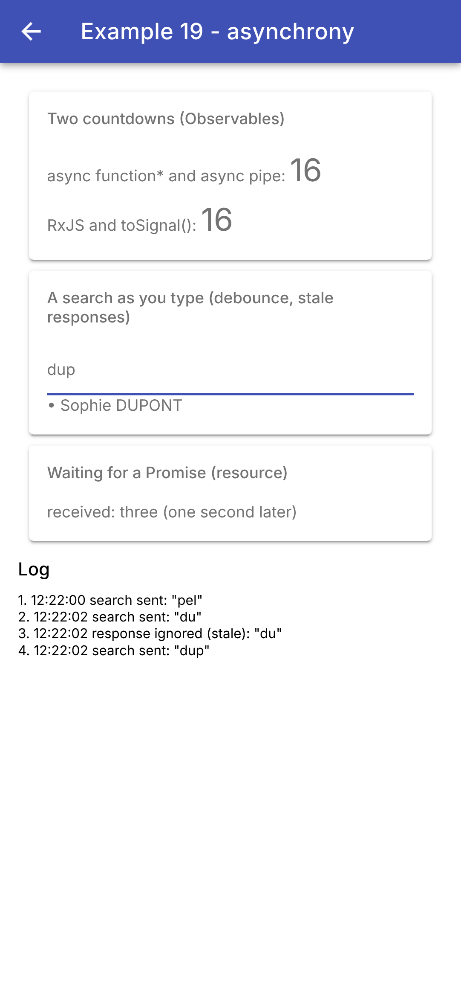
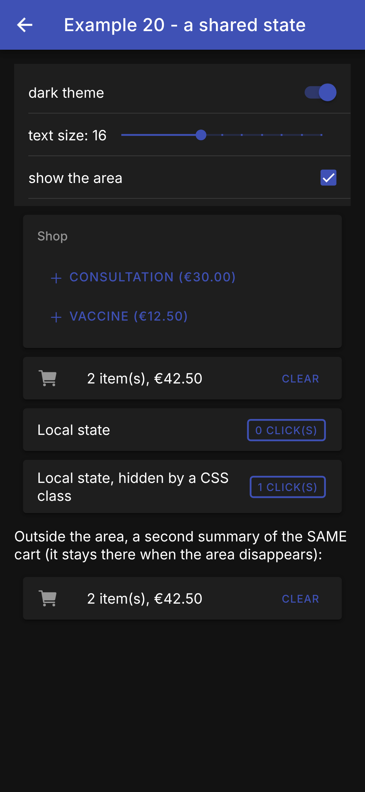

6. Operações assíncronas e estado compartilhado
6.1. Exemplo 19: Promises, Observables e timers
Muitas coisas acontecem “mais tarde”: ticks de timer, teclas digitadas e respostas do servidor. Uma aplicação [Ionic] tem dois tipos para isso:
- [Promise<T>], a do [JavaScript]: UM valor, mais tarde (uma resposta do servidor, uma seleção feita em uma janela). As palavras-chave [async] e [await] permitem aguardá-lo sem bloquear a aplicação. É o [Future] do [Dart];
- [Observable<T>], que vem da biblioteca [RxJS], fornecida com o [Angular]: uma SEQUÊNCIA de valores ao longo do tempo (ticks, teclas digitadas, mensagens...), que são transformados por operadores ([map], [take], [debounceTime], [switchMap]...). É o [Stream] derivado do [Dart]. [JavaScript] também tem suas contrapartes assíncronas: os geradores assíncronos ([async function*]), que são os equivalentes das funções [async*] do [Dart].
Para exibi-los, o [Angular] oferece três ferramentas, equivalentes ao [FutureBuilder] e ao [StreamBuilder]: o pipe [async] (um [Observable] lido a partir do template), [toSignal()] (um [Observable] convertido em signal) e [resource()] (uma [Promise] convertida em signals). E para o que deve acontecer após um atraso: [setTimeout], ou os timers do [RxJS] ([timer], [interval]).
6.1.1. A página
| // =========================================================================
// src/app/ex19-asynchronous/ex19.page.ts - promises, observables, timers
// -------------------------------------------------------------------------
// Muitas coisas acontecem "depois": os ticks de um timer, as
// teclas digitadas, a resposta de um servidor. Dois tipos estão disponíveis:
// - Promise (JavaScript): UM valor, depois (a resposta de um
// servidor); async / await para esperá-lo;
// - Observable (biblioteca RxJS, distribuída com o Angular): uma SEQUÊNCIA de
// valores, ao longo do tempo (ticks, teclas digitadas...), que transformamos
// com "operadores" (map, take, debounceTime, switchMap...).
// Para exibi-los, o Angular oferece o pipe async (um Observable no
// template), toSignal() (um Observable transformado em signal) e resource() (uma
// Promise transformada em signal).
// =========================================================================
import { AsyncPipe } from '@angular/common';
import { Component, resource, signal } from '@angular/core';
import { takeUntilDestroyed, toSignal } from '@angular/core/rxjs-interop';
import {
IonBackButton, IonButtons, IonCard, IonCardContent, IonCardHeader, IonCardSubtitle, IonContent, IonHeader, IonInput,
IonNote, IonTitle, IonToolbar,
} from '@ionic/angular';
import { debounceTime, finalize, from, map, Observable, of, Subject, switchMap, take, tap, timer } from 'rxjs';
const doctors = ['Marie PELISSIER', 'Paul TATOU', 'Sophie DUPONT', 'Jacques DURAND', 'Martine PELLETIER'];
// um timer na forma de uma Promise: termina após ms milissegundos
function wait(ms: number): Promise<void> {
return new Promise((resolve) => setTimeout(resolve, ms));
}
// um "servidor" simulado: a resposta (uma Promise) chega após um atraso aleatório
async function search(text: string): Promise<string[]> {
await wait(200 + Math.floor(Math.random() * 600));
return doctors.filter((m) => m.toLowerCase().includes(text));
}
// 1a. um GERADOR ASSÍNCRONO (async function*, com um asterisco): cada
// yield ENVIA um valor a quem itera sobre ele (for await...of)
async function* countdown(start: number): AsyncGenerator<number> {
for (let remaining = start; remaining >= 0; remaining--) {
yield remaining;
if (remaining > 0) await wait(1000);
}
}
// "15:30:45"
const currentTime = () => new Date().toTimeString().substring(0, 8);
@Component({
selector: 'app-ex19',
imports: [
AsyncPipe, IonHeader, IonToolbar, IonButtons, IonBackButton, IonTitle, IonContent, IonCard, IonCardHeader,
IonCardSubtitle, IonCardContent, IonInput, IonNote,
],
templateUrl: './ex19.page.html',
styles: `
.number { font-size: 2em; color: var(--ion-text-color); }
.log { font-size: 12px; }
`,
})
export class Ex19Page {
readonly log = signal<string[]>([]);
// 1a. o gerador, transformado em Observable por from(); o template
// o exibe com o pipe async. Criado UMA VEZ, em um campo
readonly countdown$: Observable<number> = from(countdown(20));
// 1b. a mesma contagem regressiva, com operadores RxJS: timer(0, 1000)
// emite 0, 1, 2... a cada segundo; take(21) para após 21 valores;
// map os transforma (0 -> 20, 1 -> 19...). toSignal: um signal cujo valor é
// o último valor recebido (undefined antes do primeiro)
readonly countdown = toSignal(timer(0, 1000).pipe(take(21), map((i) => 20 - i)));
// 3. uma Promise que termina após um segundo, seguida de resource():
// um objeto com signals (isLoading(), hasValue(), value(), error()...)
readonly message = resource({
loader: async () => {
await wait(1000);
return 'three (one second later)';
},
});
// 2. a busca enquanto se digita: um Subject é um Observable no
// qual EMPURRAMOS os valores nós mesmos (next): aqui, cada tecla digitada
private readonly keystrokes = new Subject<string>();
readonly results = signal<string[]>([]);
constructor() {
this.keystrokes
.pipe(
// o DEBOUNCE: um valor só é repassado após 400 ms sem
// uma nova tecla; teclas muito próximas são esquecidas
debounceTime(400),
map((text) => text.trim().toLowerCase()),
// switchMap: cada texto inicia uma busca (um Observable); uma
// NOVA busca ABANDONA a anterior, cuja resposta nunca
// será repassada: nenhuma resposta "obsoleta"
switchMap((text) => this.launch(text)),
// a assinatura termina quando a página é destruída
takeUntilDestroyed(),
)
.subscribe((found) => this.results.set(found));
}
private trace(message: string): void {
this.log.update((lines) => [...lines, `${currentTime()} ${message}`]);
}
// chamado a cada tecla digitada
input(text: string | null | undefined): void {
this.keystrokes.next(text ?? '');
}
private launch(text: string): Observable<string[]> {
// menos de duas letras: nenhuma busca, nenhum resultado
if (text.length < 2) {
return of([]);
}
this.trace(`search sent: "${text}"`);
let received = false;
// from(Promise): um Observable que emite o valor da Promise e depois é concluído
return from(search(text)).pipe(
tap(() => (received = true)),
// finalize: chamado quando o Observable é concluído OU quando cancelamos a assinatura
// (é o que o switchMap faz quando chega uma nova busca)
finalize(() => {
if (!received) this.trace(`response ignored (stale): "${text}"`);
}),
);
}
}
|
| <!-- ======================================================================
ex19.page.html - promises, observables e timers
====================================================================== -->
<ion-header>
<ion-toolbar color="primary">
<ion-buttons slot="start">
<ion-back-button defaultHref="/" />
</ion-buttons>
<ion-title>Example 19 - asynchrony</ion-title>
</ion-toolbar>
</ion-header>
<ion-content class="ion-padding">
<ion-card>
<ion-card-header>
<ion-card-subtitle>Two countdowns (Observables)</ion-card-subtitle>
</ion-card-header>
<ion-card-content>
<!-- o pipe async se inscreve no Observable, exibe cada novo
valor e cancela a inscrição quando a página desaparece; ele é null
antes do primeiro valor. @let: uma variável de template -->
@let n = countdown$ | async;
<p>async function* and async pipe: <span class="number">{{ n ?? '...' }}</span></p>
<!-- o signal: undefined antes do primeiro valor -->
<p>RxJS and toSignal(): <span class="number">{{ countdown() ?? '...' }}</span></p>
</ion-card-content>
</ion-card>
<ion-card>
<ion-card-header>
<ion-card-subtitle>A search as you type (debounce, stale responses)</ion-card-subtitle>
</ion-card-header>
<ion-card-content>
<!-- (ionInput): a cada tecla digitada -->
<ion-input placeholder="at least two letters: pel, dur..." (ionInput)="input($event.detail.value)" />
@for (r of results(); track r) {
<p>• {{ r }}</p>
} @empty {
<ion-note>no result</ion-note>
}
</ion-card-content>
</ion-card>
<ion-card>
<ion-card-header>
<ion-card-subtitle>Waiting for a Promise (resource)</ion-card-subtitle>
</ion-card-header>
<ion-card-content>
<!-- enquanto a Promise não terminar: o conteúdo de espera -->
@if (message.hasValue()) {
<p>received: {{ message.value() }}</p>
} @else {
<ion-note>waiting...</ion-note>
}
</ion-card-content>
</ion-card>
<h6>Log</h6>
@for (line of log(); track $index) {
<div class="log">{{ $index + 1 }}. {{ line }}</div>
}
</ion-content>
|
Ferramentas:
- linhas 28–30 (.ts): um timer na forma de [Promise]. [new Promise(...)] recebe uma função que inicia a tarefa e chamará [resolve] quando ela terminar; aqui, [setTimeout] a chama após [ms] milissegundos. [await wait(1000)] espera, portanto, um segundo, sem bloquear a aplicação (era o [Future.delayed] com o [Dart]);
- linhas 33–36 (.ts): um “servidor” simulado: uma função [async], que retorna uma [Promise]; sua resposta chega após um atraso aleatório (entre 200 e 800 milissegundos);
- linhas 40–45 (.ts): um gerador assíncrono: uma função [async function*] (com um asterisco). Cada [yield] entrega um valor a quem percorre o gerador; entre dois valores, a função espera um segundo. Ele pode ser percorrido com um laço [for await (const n of countdown(20))].
A primeira contagem regressiva:
- linha 67 (.ts): o gerador, convertido em [Observable] por [from()], que aceita um gerador assíncrono, uma [Promise], um array... Por convenção, o nome de uma variável que contém um [Observable] termina com [$];
- Linha 23 (HTML): o pipe [async] assina o [Observable], exibe cada novo valor e cancela a assinatura automaticamente quando a página é fechada; ele vale [null] antes de o primeiro valor ser recebido. [@let n = ...] declara uma variável de template, lida na linha 24 ([n ?? '...']: três pontos enquanto [n] for igual a [null]). Como no [Flutter], o [Observable] é criado UMA ÚNICA VEZ em um campo da classe: se o template chamasse um método que o criasse, cada atualização da tela reiniciaria a contagem regressiva!
A segunda, com os operadores do [RxJS]:
- linha 73 (.ts): [timer(0, 1000)] emite 0 imediatamente e depois 1, 2, 3... a cada segundo; o método [pipe] aplica operadores a ele, um após o outro: [take(21)] mantém apenas os 21 primeiros valores (depois o [Observable] termina); [map] transforma cada valor (0 vira 20, 1 vira 19...). [toSignal] assina o [Observable] e o transforma em um signal, que é igual ao último valor recebido ([undefined] antes do primeiro); ele cancela a assinatura quando a página é destruída;
- linha 26 (HTML): o signal é lido como qualquer outro signal.
A [Promise] esperada:
- linhas 77–82 (.ts): [resource()] recebe uma função [loader] que retorna uma [Promise], a invoca e expõe seu estado como signals: [isLoading()], [hasValue()], [value()], [error()]. Se fornecêssemos uma opção [params]—uma função que lê signals—, o resource seria recarregado sempre que eles mudassem (o [loader], porém, não é monitorado): vamos usá-la para consultar um servidor;
- linhas 51–55 (HTML): enquanto a [Promise] não terminar, o conteúdo de espera; depois, o seu valor (era o [FutureBuilder] e o [ConnectionState.done]).
Busca durante a digitação:
- linha 86 (.ts): um [Subject] é um [Observable] no qual nós mesmos EMPURRAMOS os valores ([next]): aqui, cada tecla digitada (linhas 111–113, disparadas pelo evento [(ionInput)] do campo, linha 36 do HTML);
- linha 94 (.ts): debouncing: esperamos o usuário fazer uma pausa antes de consultar o servidor, em vez de enviar uma requisição a cada tecla. O operador [debounceTime(400)] só emite um valor após 400 milissegundos sem um novo valor: teclas digitadas muito próximas umas das outras são ignoradas. Com o [Flutter], era preciso cancelar e reiniciar manualmente um timer ([Timer]) a cada tecla;
- linha 95 (.ts): o texto, sem espaços ao redor, em minúsculas;
- linha 99 (.ts): respostas expiradas. Uma resposta que chega DEPOIS de outra busca ter sido iniciada deve ser ignorada: caso contrário, a resposta lenta de uma busca antiga sobrescreveria a da nova. O operador [switchMap] cuida disso: para cada texto, ele chama [launch], que retorna um [Observable] (a busca); quando um novo texto chega, ele CANCELA A ASSINATURA, interrompendo a busca anterior—cuja resposta nunca será transmitida—e então inicia a nova. Com o [Flutter], era necessário numerar as buscas e comparar os números;
- Linha 101 (.ts): [takeUntilDestroyed()] encerra a assinatura quando a página é destruída: sem ele, o [Subject] e seus operadores continuariam a existir (era o [dispose] do [Flutter]). Ele deve ser chamado dentro de um “contexto de injeção”: neste caso, o construtor;
- linha 103 (.ts): [subscribe] assina o [Observable]: nada acontece até que alguém assine. Cada lista de resultados é armazenada em um signal, que o template exibe (linhas 37–41 do HTML);
- linhas 117–119 (.ts): menos de duas letras: nenhuma busca; [of([])] é um [Observable] que retorna imediatamente uma lista vazia;
- linhas 123–130 (.ts): a busca: a [Promise] do servidor, transformada em [Observable] por [from()]. [tap] executa uma ação de passagem, sem modificar o valor: anota que a resposta chegou. [finalize] é chamado quando o [Observable] termina ou quando o usuário cancela a assinatura dele: se a resposta não chegou, significa que o [switchMap] abandonou essa busca, e isso é registrado no log.
Digitamos “p”, “pe” e “pel” rapidamente: uma única busca é enviada. Depois “du”, seguido de “dup” antes de a resposta a “du” chegar: a busca por “du” é abandonada (sua resposta é ignorada) no momento em que a busca por “dup” é enviada. À esquerda, a página ao abrir; à direita, cinco segundos depois:
 |  |
No log, a linha “response ignored” precede a linha “search sent: ‘dup’”: [switchMap] cancela a assinatura da busca antiga antes de iniciar a nova.
No [Dart], [Future] e [Stream] fazem parte da biblioteca base, e [async], [await], [async*], [yield] e [await for] fazem parte da linguagem. No [JavaScript], [Promise], [async], [await] e os geradores assíncronos também estão incluídos na linguagem; mas, para sequências de valores, o [Angular] se apoia na biblioteca [RxJS], cujas cerca de cem operadores resolvem problemas como debouncing e respostas expiradas em uma única linha. O cliente HTTP do [Angular] (exemplos 22 a 25) também retorna [Observable]. Desde a chegada dos signals, o [Angular] reserva o [RxJS] para fluxos de eventos e usa [toSignal] ou [resource] para exibi-los.
6.2. Exemplo 20: Um estado compartilhado
A mesma pergunta das lições anteriores: quais são os “escopos” dos dados de uma aplicação?
- O estado local de um componente desaparece quando o componente é destruído;
- o estado de um “store” é compartilhado por todos os componentes e sobrevive à remoção deles… mas não ao encerramento da aplicação;
- O estado armazenado no dispositivo sobrevive quando a aplicação é encerrada.
6.2.1. O carrinho de compras
| // =========================================================================
// src/app/ex20-shared-state/stores/cart.ts - um ESTADO COMPARTILHADO: um serviço
// -------------------------------------------------------------------------
// Uma "store" é um estado que vive FORA das páginas e dos
// componentes, em UMA ÚNICA instância, compartilhada por todos que a leem.
// No Angular, é um SERVIÇO (veja o exemplo 14) cujo estado é feito de
// SIGNALS. Organização usual:
// - o ESTADO: signals PRIVADOS (_items);
// - sua leitura: views somente leitura (asReadonly);
// - as AÇÕES: métodos, os únicos que modificam o estado;
// - os valores calculados: signals computed.
// Um componente a obtém com inject(Cart); seu template, que lê os
// signals, é atualizado quando ELES mudam, e somente eles.
// providedIn: 'root': o serviço é criado na primeira solicitação e vive
// enquanto a aplicação viver: sobrevive à remoção de um componente... mas
// não à parada da aplicação.
// =========================================================================
import { computed, Injectable, signal } from '@angular/core';
export interface Item {
label: string;
price: number;
}
@Injectable({ providedIn: 'root' })
export class Cart {
private readonly _items = signal<Item[]>([]);
// uma view NÃO MODIFICÁVEL do estado: somente as ações o alteram
readonly items = this._items.asReadonly();
readonly count = computed(() => this._items().length);
readonly total = computed(() => this._items().reduce((s, a) => s + a.price, 0));
add(item: Item): void {
// um NOVO array: o signal percebe que seu valor mudou
this._items.update((items) => [...items, item]);
}
clear(): void {
this._items.set([]);
}
}
|
Um store é um estado que abrange páginas e componentes, existindo como uma instância única compartilhada por todos que o acessam. Com o [Angular], é simplesmente um serviço (veja o Exemplo 14) cujo estado é formado por signals: não há nenhuma biblioteca a adicionar, ao passo que o [Flutter] usava o pacote [provider] em torno de um [ChangeNotifier].
- linha 26: [providedIn: 'root']: o serviço é criado na sua primeira solicitação ([inject(Cart)]), como uma instância única, e permanece ativo enquanto a aplicação estiver em execução;
- linha 28: o estado: um signal privado;
- Linha 30: uma view somente leitura do estado ([asReadonly()]): somente as ações o alteram;
- Linhas 31–32: valores calculados: signals [computed], recalculados apenas quando a lista de itens muda;
- Linhas 34–41: Ações: métodos, os únicos que modificam o estado. Linha 36: um NOVO array ([...items] copia os itens), e não [push] como na versão antiga: um signal compara os valores antigo e novo ([===]) e notifica seus assinantes somente se forem diferentes. Não é preciso escrever [notifyListeners()]: o signal cuida da notificação.
6.2.2. Preferências
| // =========================================================================
// src/app/ex20-shared-state/stores/preferences.ts - um estado que sobrevive à parada
// -------------------------------------------------------------------------
// Para que um dado sobreviva à parada da aplicação, ele deve ser armazenado
// NO DISPOSITIVO. O "plugin" @capacitor/preferences oferece um pequeno
// dicionário chave -> valor (strings), específico da aplicação e
// mantido no dispositivo (Android: as SharedPreferences; em um
// navegador: o localStorage). Todos os seus métodos são ASSÍNCRONOS
// (retornam uma Promise):
// - na inicialização, lemos os valores armazenados;
// - a cada mudança, gravamos novamente.
// NUNCA armazenamos dados sensíveis aqui (senha, token): eles são
// gravados em texto puro.
// =========================================================================
import { effect, Injectable, signal } from '@angular/core';
// "as DeviceStorage": renomeado, para não confundir com nossa classe
import { Preferences as DeviceStorage } from '@capacitor/preferences';
const darkKey = 'example20.dark';
const sizeKey = 'example20.size';
@Injectable({ providedIn: 'root' })
export class Preferences {
// o estado inicial: os valores padrão, enquanto se espera a leitura
private readonly _dark = signal(false);
private readonly _size = signal(16); // tamanho do texto
readonly dark = this._dark.asReadonly();
readonly size = this._size.asReadonly();
constructor() {
this.load();
// um EFFECT: uma função reexecutada a cada vez que um signal que ela lê
// muda. Ele aplica as preferências à aplicação INTEIRA:
// - a classe ion-palette-dark em <html>: o tema escuro do Ionic
// (veja styles.scss);
// - o tamanho da fonte de <html>: os componentes do Ionic
// têm tamanhos em rem (múltiplos desse tamanho), eles o acompanham
effect(() => {
document.documentElement.classList.toggle('ion-palette-dark', this._dark());
document.documentElement.style.fontSize = `${this._size()}px`;
});
}
// o que o dispositivo armazenou (value é null se a chave não existir)
private async load(): Promise<void> {
const dark = await DeviceStorage.get({ key: darkKey });
const size = await DeviceStorage.get({ key: sizeKey });
if (dark.value !== null) this._dark.set(dark.value === 'true');
if (size.value !== null) this._size.set(Number(size.value));
}
// um parâmetro opcional por preferência: só alteramos o que for informado
update({ dark, size }: { dark?: boolean; size?: number }): void {
if (dark !== undefined) {
this._dark.set(dark);
DeviceStorage.set({ key: darkKey, value: String(dark) }); // gravação no dispositivo
}
if (size !== undefined) {
this._size.set(size);
DeviceStorage.set({ key: sizeKey, value: String(size) });
}
}
}
|
Para que os dados sobrevivam depois que a aplicação é fechada, eles precisam ser armazenados no dispositivo. O “plugin” [@capacitor/preferences] do [Capacitor] oferece um pequeno dicionário de chave-valor (de strings), específico da aplicação e armazenado no dispositivo: as [SharedPreferences] do [Android] (as mesmas usadas pelo pacote [shared_preferences] do [Flutter]) e, em um navegador, o [localStorage]. Todos os seus métodos são assíncronos: eles retornam uma [Promise].
- linha 18: o plugin também se chama [Preferences]; [as DeviceStorage] o renomeia neste arquivo para evitar confusão com a nossa classe;
- Linhas 26–29: O estado inicial, com signals definidos com seus valores padrão, e suas views somente leitura;
- linha 32: A leitura do dispositivo começa quando o serviço é criado. Ela é assíncrona: por um breve instante, os valores padrão se aplicam;
- linhas 39–42: um efeito ([effect]): uma função que é reexecutada toda vez que um signal que ela lê muda. Ela aplica as preferências a TODA a aplicação: a classe CSS [ion-palette-dark] na tag [<html>] ativa o tema escuro no [Ionic] (definido em [styles.scss]); o tamanho da fonte em [<html>] aumenta o texto, porque os componentes do [Ionic] expressam seus tamanhos em [rem] (como múltiplos desse tamanho). Um efeito serve a este propósito: repassar signals ao mundo externo (DOM, armazenamento etc.); ele não deve ser usado para calcular outros signals ([computed] foi concebido para isso);
- linhas 46–51: operação de leitura do dispositivo: [DeviceStorage.get] retorna uma [Promise] de [{ value }], em que [value] é igual a [null] se a chave não existir. Os valores são strings: eles são convertidos;
- linhas 54–63: uma única ação com parâmetros opcionais (um objeto desestruturado: [{ dark, size }]): somente o valor fornecido é alterado, e ele é imediatamente gravado no dispositivo ([DeviceStorage.set]). Não esperamos a conclusão da gravação: o signal já mudou.
NUNCA armazene dados sensíveis (senhas, tokens) ali: eles são gravados em texto simples. Para isso, existem plugins que usam o cofre do sistema (o [Keystore] do [Android], o [Keychain] do [iOS]).
6.2.3. Os componentes
| // =========================================================================
// src/app/ex20-shared-state/components/shop.ts - ADICIONA ao carrinho compartilhado
// -------------------------------------------------------------------------
// A loja apenas CHAMA uma ação do carrinho; seu template não lê
// nenhum signal do carrinho: ela não é atualizada quando o carrinho muda.
// =========================================================================
import { CurrencyPipe } from '@angular/common';
import { Component, inject } from '@angular/core';
import { IonButton, IonCard, IonCardContent, IonCardHeader, IonCardSubtitle, IonIcon } from '@ionic/angular';
import { addIcons } from 'ionicons';
import { add } from 'ionicons/icons';
import { Item, Cart } from '../stores/cart';
const products: Item[] = [
{ label: 'Consultation', price: 30 },
{ label: 'Vaccine', price: 12.5 },
];
@Component({
selector: 'app-ex20-shop',
imports: [CurrencyPipe, IonCard, IonCardHeader, IonCardSubtitle, IonCardContent, IonButton, IonIcon],
templateUrl: './shop.html',
})
export class Shop {
readonly products = products;
// o MESMO carrinho dos outros componentes (uma única instância)
readonly cart = inject(Cart);
constructor() {
addIcons({ add });
}
}
|
| <!-- ======================================================================
shop.html - dois produtos para adicionar ao carrinho
====================================================================== -->
<ion-card>
<ion-card-header>
<ion-card-subtitle>Shop</ion-card-subtitle>
</ion-card-header>
<ion-card-content>
@for (p of products; track p.label) {
<ion-button fill="clear" (click)="cart.add(p)">
<ion-icon slot="start" name="add" />
{{ p.label }} ({{ p.price | currency: 'EUR' }})
</ion-button>
}
</ion-card-content>
</ion-card>
|
- linha 28 (.ts): [inject(Cart)] retorna o MESMO carrinho de compras que os outros componentes;
- linha 11 (html): a loja simplesmente chama uma ação. Seu template não lê nenhum signal do carrinho: ele não é atualizado quando o carrinho muda (era o [context.read<Cart>()] com o [provider]);
- linha 13 (html): o pipe [currency] formata o preço no estilo inglês (veja o exemplo 09).
| // =========================================================================
// src/app/ex20-shared-state/components/cart-summary.ts - LÊ o mesmo carrinho
// -------------------------------------------------------------------------
// O template lê dois signals do carrinho, count() e total(): ele é atualizado
// quando UM deles muda, e somente então.
// =========================================================================
import { CurrencyPipe } from '@angular/common';
import { Component, inject } from '@angular/core';
import { IonButton, IonCard, IonIcon, IonItem, IonLabel } from '@ionic/angular';
import { addIcons } from 'ionicons';
import { cart } from 'ionicons/icons';
import { Cart } from '../stores/cart';
@Component({
selector: 'app-ex20-cart-summary',
imports: [CurrencyPipe, IonCard, IonItem, IonIcon, IonLabel, IonButton],
templateUrl: './cart-summary.html',
})
export class CartSummary {
readonly cart = inject(Cart);
constructor() {
addIcons({ cart });
}
}
|
| <!-- ======================================================================
cart-summary.html - o número de itens e o total do carrinho
====================================================================== -->
<ion-card>
<ion-item lines="none">
<ion-icon slot="start" name="cart" />
<ion-label>{{ cart.count() }} item(s), {{ cart.total() | currency: 'EUR' }}</ion-label>
<ion-button slot="end" fill="clear" [disabled]="cart.count() === 0" (click)="cart.clear()">
Clear
</ion-button>
</ion-item>
</ion-card>
|
- Linhas 8–9 (HTML): O template lê dois signals do carrinho, [count()] e [total()]: Ele é atualizado quando qualquer um deles muda, e somente então. Com o [provider], era preciso escolher entre [context.watch] (o carrinho inteiro) e [context.select] (um único item); com os signals, a precisão é automática: ela depende do que é lido.
| // =========================================================================
// src/app/ex20-shared-state/components/local-counter.ts - um estado LOCAL
// -------------------------------------------------------------------------
// O signal clicks pertence ao componente: nasce com ele e desaparece
// com ele.
// =========================================================================
import { Component, input, signal } from '@angular/core';
import { IonButton, IonCard, IonItem, IonLabel } from '@ionic/angular';
@Component({
selector: 'app-ex20-local-counter',
imports: [IonCard, IonItem, IonLabel, IonButton],
templateUrl: './local-counter.html',
})
export class LocalCounter {
readonly title = input.required<string>();
readonly clicks = signal(0);
}
|
| <!-- ======================================================================
local-counter.html - um contador de cliques
====================================================================== -->
<ion-card>
<ion-item lines="none">
<ion-label>{{ title() }}</ion-label>
<ion-button slot="end" fill="outline" (click)="clicks.set(clicks() + 1)">{{ clicks() }} click(s)</ion-button>
</ion-item>
</ion-card>
|
Um estado local (linha 18 do arquivo .ts), que é criado e destruído junto com o componente.
6.2.4. A página
| // =========================================================================
// src/app/ex20-shared-state/ex20.page.ts - três "escopos" de dados
// -------------------------------------------------------------------------
// - o estado LOCAL de um componente (LocalCounter) desaparece com ele;
// - o estado de um SERVIÇO (o carrinho) é compartilhado por todos os componentes
// e sobrevive à sua remoção - mas não à parada da aplicação;
// - o estado armazenado no dispositivo (as preferências) sobrevive à parada.
// E a classe CSS ion-hide: o conteúdo fica OCULTO, mas não é removido; seu
// estado local é mantido.
// Desmarque e marque novamente "mostrar a área", depois pare e reinicie
// a aplicação: compare.
// =========================================================================
import { Component, inject, signal } from '@angular/core';
import {
IonBackButton, IonButtons, IonCheckbox, IonContent, IonHeader, IonItem, IonLabel, IonList, IonRange, IonTitle,
IonToggle, IonToolbar,
} from '@ionic/angular';
import { Shop } from './components/shop';
import { LocalCounter } from './components/local-counter';
import { CartSummary } from './components/cart-summary';
import { Preferences } from './stores/preferences';
@Component({
selector: 'app-ex20',
imports: [
IonHeader, IonToolbar, IonButtons, IonBackButton, IonTitle, IonContent, IonList, IonItem, IonLabel, IonToggle,
IonRange, IonCheckbox, Shop, CartSummary, LocalCounter,
],
templateUrl: './ex20.page.html',
})
export class Ex20Page {
readonly preferences = inject(Preferences);
// um estado local da página
readonly areaVisible = signal(true);
}
|
| <!-- ======================================================================
ex20.page.html - um estado compartilhado
====================================================================== -->
<ion-header>
<ion-toolbar color="primary">
<ion-buttons slot="start">
<ion-back-button defaultHref="/" />
</ion-buttons>
<ion-title>Example 20 - a shared state</ion-title>
</ion-toolbar>
</ion-header>
<ion-content class="ion-padding">
<ion-list>
<ion-item>
<!-- [checked]: o valor do serviço; (ionChange): a ação que o modifica -->
<ion-toggle [checked]="preferences.dark()"
(ionChange)="preferences.update({ dark: $event.detail.checked })">dark theme</ion-toggle>
</ion-item>
<ion-item>
<!-- snaps / ticks: marcas, a cada passo -->
<ion-range [min]="12" [max]="22" [step]="1" [snaps]="true" [ticks]="true" [value]="preferences.size()"
(ionChange)="preferences.update({ size: +$event.detail.value })">
<ion-label slot="label">text size: {{ preferences.size() }}</ion-label>
</ion-range>
</ion-item>
<ion-item>
<ion-checkbox [checked]="areaVisible()" (ionChange)="areaVisible.set($event.detail.checked)">
show the area</ion-checkbox>
</ion-item>
</ion-list>
<!-- removido: esses componentes desaparecem, com seu estado local -->
@if (areaVisible()) {
<app-ex20-shop />
<app-ex20-cart-summary />
<app-ex20-local-counter title="Local state" />
}
<!-- oculto (ion-hide: display none): o componente permanece na memória, seu estado é mantido -->
<app-ex20-local-counter title="Local state, hidden by a CSS class" [class.ion-hide]="!areaVisible()" />
<p>Outside the area, a second summary of the SAME cart (it stays there when the area disappears):</p>
<app-ex20-cart-summary />
</ion-content>
|
- linha 33 (.ts): as preferências, um serviço; ele é criado (e lê o dispositivo) na primeira solicitação;
- linha 35 (.ts): um estado local da página: a área está sendo exibida?
- linhas 18–19 (html): um interruptor ([<ion-toggle>]): [[checked]] recebe o valor do serviço, e [(ionChange)] chama a ação dele;
- linhas 23–26 (html): um controle deslizante ([<ion-range>]) variando de 12 a 22, com marcas de graduação ([snaps], [ticks]); [+$event.detail.value] converte o valor em número;
- linhas 29–30 (html): uma caixa de seleção, vinculada ao estado local;
- linhas 35–39 (HTML): removida ([@if]); a área desaparece—seus componentes são DESTRUÍDOS, junto com o estado local deles;
- linha 41 (html): ocultada pela classe CSS [ion-hide] do [Ionic] ([display: none]); o componente permanece na memória: seu estado é preservado. [[class.ion-hide]="..."] define a classe quando a expressão é verdadeira. (Antes era o [Visibility(maintainState: true)] do [Flutter].)
- Linha 44 (html): um segundo resumo do mesmo carrinho, fora da área.
O carrinho e as preferências são compartilhados por toda a aplicação ([providedIn: 'root']). Para tornar um serviço específico de uma página (uma instância por página, destruída junto com ela), ele é declarado nos [providers] do seu componente, como mostrado no Exemplo 21.
6.2.5. Execução
Adicionamos dois itens, clicamos duas vezes no primeiro contador local e uma vez no segundo (à esquerda); removemos a área e passamos para o tema escuro (no meio); restauramos a área (à direita):
 |  |  |
O carrinho sobreviveu à remoção da seção (como mostra o segundo resumo); o contador removido voltou a zero; o contador oculto manteve seu valor. Pare a aplicação e reinicie-a (no navegador: recarregue a página): o tema escuro e o tamanho do texto são preservados, e o carrinho está vazio. As preferências se aplicam a toda a aplicação: ao voltar ao menu, ele também está no modo escuro.
Por que não usar uma biblioteca de gerenciamento de estado? Existem algumas disponíveis para o [Angular] ([NgRx], sua variante [SignalStore], [NGXS]...), assim como existem para o [Flutter] ([provider], [Riverpod], [Bloc]...). Mas a injeção de dependência e os signals já cuidam do essencial: um serviço baseado em signals é um store, e é isso que o estudo de caso usará.